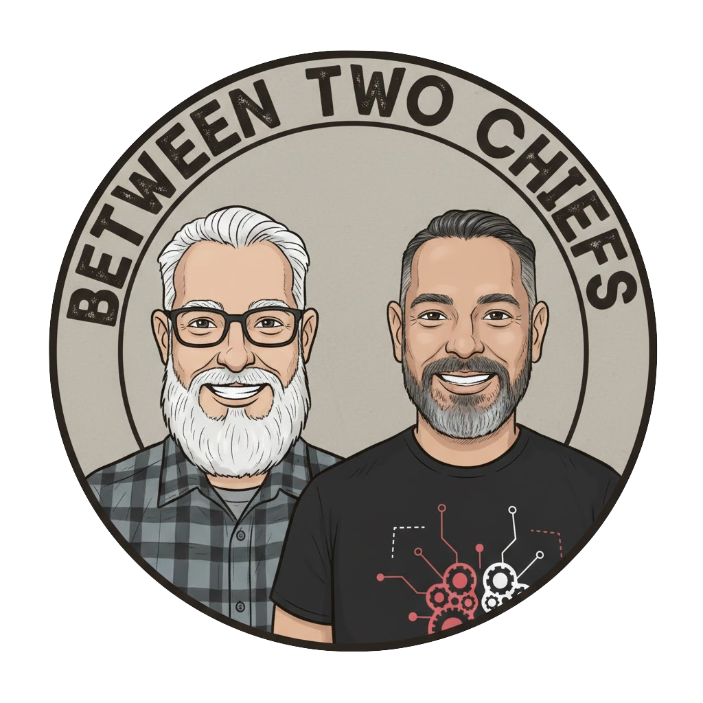

Candid conversations on innovation, architecture, and the open-source future—caught right Between Two Chiefs. Subscribe to get notified when we launch!
Join Red Hat Chief Architects Francisco Ramirez and Damien Eversmann as they explore the intersection of technology and the public sector. With a combined half-century of experience across government and education, they are at the forefront of open-source innovation. From DevSecOps to enterprise automation, Francisco and Damien bridge the gap between complex architecture and real-world mission success, offering listeners a front-row seat to the future of digital transformation.
Co-Host
Francisco Ramirez is Red Hat's Chief Architect for State and Local Government. He brings over two decades of experience supporting Public and Private sector organizations. He specializes in empowering state and local government customers to transform their enterprise environments, enhance their security posture, and develop innovative service offerings to deliver an exceptional citizen experience. Francisco enjoys helping customers and partners understand how Red Hat's open-source solutions and platforms can catalyze innovation and directly drive business outcomes.
Co-Host
Damien Eversmann is a Chief Architect at Red Hat and a 2022 EdScoop Industry Leader of the Year, with over 30 years of experience shaping the intersection of technology, government, and higher education. A self-described "technologist and educator," Damien bridges the gap between complex architectural solutions and the human missions they serve. With a unique background that pairs a Master’s in Software Engineering with a degree in Theatre, he excels at translating sophisticated concepts like Continuous Modernization, DevOps culture, and Agentic AI into engaging, actionable narratives. Damien is a passionate advocate for workforce development and institutional resilience in the digital age.
Be the first to know when we launch! Enter your email below to get notified about our premiere episode and future releases.
Note: If you submitted before or on May 18, please resubmit.